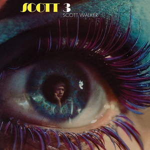
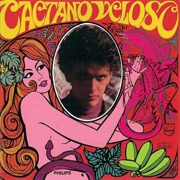
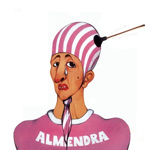

King Crimson
In the Court of the Crimson King
9¾
Captain Beefheart & His Magic Band
Trout Mask Replica
8½

The Stooges
The Stooges
8¼

Creedence Clearwater Revival
Willy and the Poor Boys
8

Frank Zappa
Hot Rats
8

Miles Davis
In a Silent Way
7¾

Nick Drake
Five Leaves Left
7¾
Led Zeppelin
Led Zeppelin II
7¾

The Beatles
Abbey Road
7½

Tim Buckley
Happy Sad
7½
Creedence Clearwater Revival
Green River
7¼

Dusty Springfield
Dusty in Memphis
7

The Rolling Stones
Let It Bleed
7

Fairport Convention
Liege & Lief
7
Pharoah Sanders
Karma
6½
- 
Scott Walker
Scott 3
6½

Can
Monster Movie
6½
Tim Buckley
Blue Afternoon
6½

The Beatles
Yellow Submarine
6½

Creedence Clearwater Revival
Bayou Country
6¼
The Velvet Underground
The Velvet Underground
6¼

Pink Floyd
More
6¼

Joni Mitchell
Clouds
6¼

Led Zeppelin
Led Zeppelin
6

MC5
Kick Out the Jams
6

Fairport Convention
Unhalfbricking
5¾

The Doors
The Soft Parade
5¾

Piero Piccioni
Camille 2000 OST
5½

Townes Van Zandt
Our Mother the Mountain
5¼
Townes Van Zandt
Townes Van Zandt
5¼
Leonard Cohen
Songs From a Room
5¼
Scott Walker
Scott 4
5

Deep Purple
Deep Purple
5

David Bowie
David Bowie (Space Oddity)
4¾

Love
Four Sail
4¾
- 
Caetano Veloso
Caetano Veloso
4½
Robbie Basho
Venus in Cancer
4½

Jane Birkin / Serge Gainsbourg
Jane Birkin et Serge Gainsbourg
4½
Neil Young & Crazy Horse
Everybody Knows This Is Nowhere
4¼

Bob Dylan
Nashville Skyline
4¼

Elvis Presley
From Elvis in Memphis
4¼
Yes
Yes
4

The Mothers of Invention
Uncle Meat
4

The Who
Tommy
4

Fairport Convention
What We Did on Our Holidays
4

Neil Young
Neil Young
3¾
Miles Davis
Filles de Kilimanjaro
3½

Pink Floyd
Ummagumma
3¼

Mutantes
Mutantes
3¼

Danlee Mitchell / Harry Partch
The World of Harry Partch
3¼
Tucker Zimmerman
Ten Songs by Tucker Zimmerman
3
Vince Guaraldi
Alma-Ville
3

David Axelrod
Songs of Experience
3
Jethro Tull
Stand Up
3
Wendy Carlos
The Well-Tempered Synthesizer
3

Deep Purple
The Book of Taliesyn
2¾

Bill Evans / Jeremy Steig
What's New
2¾
Jeff Beck Group
Beck-Ola
2¾
Buddy Holly
Giant
2¾

Genesis
From Genesis to Revelation
2¾
Fleetwood Mac
Then Play On
2¾
Harold Land
The Fox
2½

Tyrannosaurus Rex
Unicorn
2¼

Dolly Parton
In the Good Old Days (When Times Were Bad)
2¼

Dúo Salteño
Dúo Salteño
2

Aorta
Aorta
2

Os Brazões
Os Brazões
2
Elton John
Empty Sky
1¾

Cher
3614 Jackson Highway
1¾

Love
Out Here
1½

Dionne Warwick
Soulful
1½
Stevie Wonder
My Cherie Amour
1½
- 
Almendra
Almendra
1
Alice Cooper
Pretties for You
1

Françoise Hardy
En Anglais
1

Tom Jones
This Is Tom Jones
1
Nancy Sinatra
Nancy
1
Adriano Celentano
Adriano Rock
1
The Shaggs
Philosophy of the World
0¾

George Harrison
Electronic Sound
0½

John Lennon / Yoko Ono
Wedding Album
0
John Lennon / Yoko Ono
Unfinished Music No. 2: Life With the Lions
0